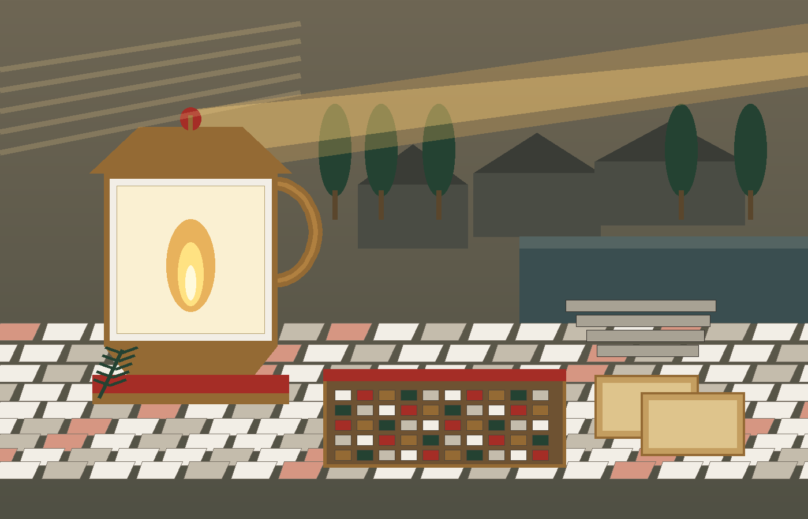
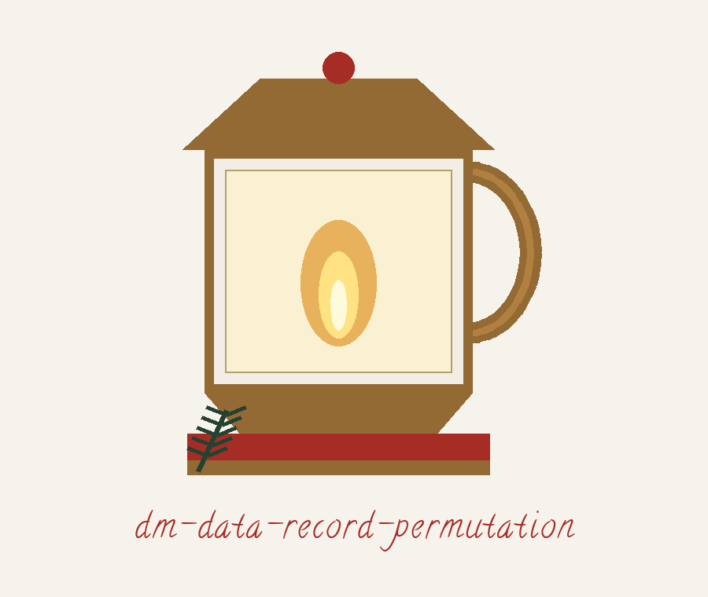
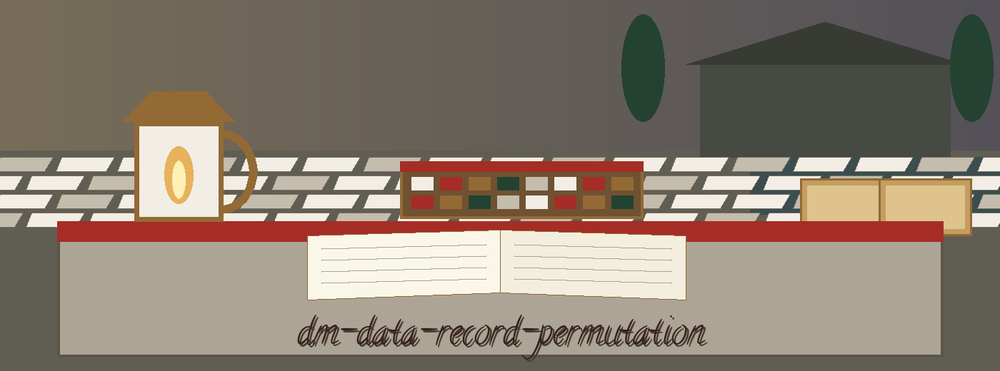

dm-data-record-permutation: The Alexandria Lighthouse Archive
Where this site names itself it uses the joined form dm-data-record-permutation: The Alexandria Lighthouse Archive, repo first, theme second. The page is a harbour log walked desk by desk.



◆ Bronze tally marker
Shuffle Seed
Output Never Lands on Input
One Seed, One Order, Twice the Same
Buttons are small Pharos lamps in aged bronze over worn stone, roman red in their recesses, their rim a fine line of mosaic tesserae. At rest a button is matte bronze. A pointer over it wakes a candlelit warmth inside the lamp chamber. A press makes it settle the way a seal settles into wax: a short drop, a hold, a lift. The chamber never spins. The lamp never swings. Keyboard focus draws two thin bronze rules around the rim. Each link is headed by a small tessellated floor square, bronze while idle, roman red while pointed at. Cards are log desks. Marble white panels with bronze corners, headings as chronicle entries in Calligraffitti, text in Barlow. A card that records a finished shuffle carries a seal ring mark in its top corner. No other card does.
Desk one: the job
Rows go in in one order and come out in another, shuffled at random, so the sequence itself stops telling tales about the people or events behind the rows. Randomly reorders the rows (records) in a data file. This disrupts the original order, which may unintentionally reveal information or patterns, particularly when combined with other masking techniques. The tool belongs to the family the README names: Tools designed to generate or mask sensitive data with realistic-looking but meaningless values.
Desk two: fetching, with one open repair
git clone https://github.com/ShadowGuard-AI/dm-data-record-permutation
The line above is labelled a mend. It is a correction, not the original. The README address spells the organisation without its hyphen, as ShadowGuardAI, and a visitor who copied it character for character would land at the wrong house. This plate prints the hyphenated house name and says plainly why it differs.
Desk three: the shape of a run
./dm-data-record-permutation [params]
That shape is all the source gives: program first, bracketed parameters after. No real file name is set beside it. No row from anyone's data is quoted. This plate leaves that space empty on purpose.
Desk four: the controls in README order
File type first, printed as --file_type, and beside it the README's own admission, printed here as an absence: No description provided. Header next, printed as --header, with its printed rule that an undeclared file is assumed to have a header row: Specify if the input file has a header row. If not specified, assume header exists. Delimiter next, printed as --delimiter, for CSV files, and here this plate stops and points: the README sentence about its default breaks off mid phrase at Default is, value absent, so this plate prints no default at all rather than guess one. Seed last, printed as --seed, with its printed split: supply an integer and the shuffle repeats, leave it out and each run draws fresh system randomness and lands in a different order.
Desk five: sameness under a seed
Two runs that share one seed and one input produce identical output. Two runs without a seed do not promise that. By default each run is a fresh random shuffle, so the permutation is not fixed and cannot be inverted from the row count alone. Pass --seed with an integer to make a run reproducible: two runs with the same seed and the same input produce identical output.
Desk six: the guard on the output path
The output file must not be the input file. If the resolved output path equals the resolved input path, the run refuses at exit 1 before any write, including when the same file is named through a ./ alias or a symlink. Output may not resolve to input, whether spelled the same way, reached through a ./ alias, or reached through a symlink, and the input file keeps its original order untouched.
Desk seven: the harbourmaster farewell desk
Entry one, the standalone LICENSE sheet: MIT wording, proprietor traced only as an outline of parts: a year span first, then a two word pen name, then a bracketed given name paired with one initial, then a bracketed handle that opens with an at sign. The line itself is not copied here.
Entry two, the log's own sign-off, preserved as printed in the README: Copyright (c) ShadowGuardAI. Here the house name appears stripped of its hyphen. The two entries stand side by side, the difference in spelling is visible, and no editorial hand smooths that difference away. A correction labelled as a correction would read: Copyright (c) ShadowGuard-AI. Site correction.
The preserved README record
 # dm-data-record-permutation Randomly reorders the rows (records) in a data file. This disrupts the original order, which may unintentionally reveal information or patterns, particularly when combined with other masking techniques. - Focused on Tools designed to generate or mask sensitive data with realistic-looking but meaningless values ## Install `git clone https://github.com/ShadowGuardAI/dm-data-record-permutation` ## Usage `./dm-data-record-permutation [params]` ## Parameters - `--file_type`: No description provided - `--header`: Specify if the input file has a header row. If not specified, assume header exists. - `--delimiter`: Delimiter for CSV files. Default is - `--seed`: Seed for a reproducible shuffle. If not specified, each run shuffles from fresh system randomness and produces a different order. ## Shuffle and output path By default each run is a fresh random shuffle, so the permutation is not fixed and cannot be inverted from the row count alone. Pass --seed with an integer to make a run reproducible: two runs with the same seed and the same input produce identical output. The output file must not be the input file. If the resolved output path equals the resolved input path, the run refuses at exit 1 before any write, including when the same file is named through a ./ alias or a symlink. ## License Copyright (c) ShadowGuardAI